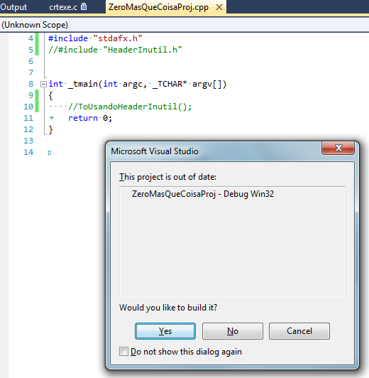

# Conteúdo da Palestra
Caloni, 2012-03-11 <ccppbr> [up] [copy]Uma nuvem mágica...
O evento de C++ na Microsoft (e organizada pelo nosso grupo C/C++ Brasil) aconteceu. Quem esteve lá teve o privilégio de passar algumas horas com programadores e entusiastas de ambas as linguagens e acompanhar o raciocínio dos palestrantes sobre Move Semantics, COM (good times), programação na placa gráfica e a solução para todos os problemas do universo (vulgo ZeroMQ). Fora isso, a palestra que me surpreendeu no dia foi a do Sr. Basílio Miranda, cômica e inspirada, mas sempre nos fornecendo um pouquinho mais de conhecimento acerca do Qt framework, que felizmente ainda não morreu (a Nokia recentemente liberou uma série nova que ainda usa a versão evoluída do Symbian), e graças a isso não precisaremos nos preocupar por enquanto com o destino de nosso ilustríssimo Sr. Basílio.
Fora isso tivemos uma telepalestra com um dos membro do time do Visual Studio. Mas, francamente, estou cada vez menos interessado no VS e mais no Vim. Portanto...
# Header Inútil
Caloni, 2012-03-27 <computer> [up] [copy]O Visual Studio é uma ótima ferramenta para depurar rapidamente programas sendo desenvolvidos e <del>para editar vários arquivos ao mesmo tempo</del> para o resto usamos Vim. No entanto, a versão 2010 do ambiente (ainda não testei a 2011 beta) possui um pequeno deslize com sua árvore de dependências que não chega a prejudica o desenvolvedor, mas o deixa com um bug atrás da orelha.
Vamos supor que você crie seu super-projeto ZeroMQ e no meio dele acabe evoluindo uma nova forma de vida inútil e descartável, que aqui iremos chamar de HeaderInutil e seu fiel companheiro CppInutil:
OK. Ele não está fazendo nada, mas e daí? Compilo meu projeto normalmente e depuro ele como se nada estivesse acontecendo.
------ Rebuild All started: Project: ZeroMasQueCoisaProj, Configuration: Debug Win32 ------ Build started 27/03/2012 11:40:32. _PrepareForClean: Deleting file "Debug\ZeroMasQueCoisaProj.lastbuildstate". InitializeBuildStatus: Creating "Debug\ZeroMasQueCoisaProj.unsuccessfulbuild" because "AlwaysCreate" was specified. ClCompile: stdafx.cpp ZeroMasQueCoisaProj.cpp CppInutil.cpp Generating Code... Manifest: Deleting file "Debug\ZeroMasQueCoisaProj.exe.embed.manifest". LinkEmbedManifest: ZeroMasQueCoisaProj.vcxproj -> c:\...\Debug\ZeroMasQueCoisaProj.exe FinalizeBuildStatus: Deleting file "Debug\ZeroMasQueCoisaProj.unsuccessfulbuild". Touching "Debug\ZeroMasQueCoisaProj.lastbuildstate". Build succeeded. Time Elapsed 00:00:00.73 ========== Rebuild All: 1 succeeded, 0 failed, 0 skipped ========== 'ZeroMasQueCoisaProj.exe': Loaded 'C:\...\Debug\ZeroMasQueCoisaProj.exe', Symbols loaded. 'ZeroMasQueCoisaProj.exe': Loaded 'C:\Windows\SysWOW64\ntdll.dll', Cannot find or open the PDB file 'ZeroMasQueCoisaProj.exe': Loaded 'C:\Windows\SysWOW64\kernel32.dll', Cannot find or open the PDB file 'ZeroMasQueCoisaProj.exe': Loaded 'C:\Windows\SysWOW64\KernelBase.dll', Cannot find or open the PDB file 'ZeroMasQueCoisaProj.exe': Loaded 'C:\Windows\SysWOW64\msvcr100d.dll', Symbols loaded. The program '[5212] ZeroMasQueCoisaProj.exe: Native' has exited with code 0 (0x0).
Show.
Mas o que acontece se eu precisar no momento do refactory (**que deve, sim, existir**) eu decidir remover meus arquivos inúteis?
Continuo compilando normalmente o projeto, mas na hora de depurar...
Mas o que ocorre? Eu acabei de compilar o projeto! E se eu compilar novamente e pressionar F5, ele continua apresentando o mesmo problema!
_OK, não estou admitindo aqui o famigerado Rebuild All. Se você mantém projetos com mais de 200 arquivos, acho que deve **repensar seus conceitos** ao usar Rebuild All para tudo nessa vida._
Acontece que existe uma árvore de dependências que o Visual Studio mantém para saber se seu projeto foi atualizado com tudo que tem mais de novo no que diz respeito ao **File System**, mas às vezes se esquece de checar o FS com o que está na solution. Por conta disso, o HeaderInutil e o CppInutil continuam dentro da árvore de dependência como zumbis.
O que pode ser feito nesse caso (além do que os personagens de The Walking Dead costumam fazer) é configurar o arquivo devenv.exe.config (presente em **%programfiles(x86)%\Microsoft Visual Studio 10.0\Common7\IDE**) e adicionar as seguintes linhas após a seção **configSections. (**Esses passos estão descritos no blogue da equipe do VC.)
<system.diagnostics> <switches> <add name="CPS" value="4" /> </switches> </system.diagnostics>
Depois de modificar o arquivo, reinicie o Visual Studio e tente novamente apertar F5 no mesmo projeto, **mas com o DebugView aberto**.

Como um amigo meu diria: "**AHÁ!!**". Descobrimos o culpado.
A solução? Nesse caso não tem jeito: dar um clean no projeto e build novamente para que o VS reconstrua a árvore de dependências. Porém, **agora sabemos por que precisamos do Rebuild All**. Não é RebuildAllMania.
# Raul: O Início, o Fim e o Meio
Caloni, 2012-03-28 <cinema> <movies> [up] [copy]"Raul" é um tipo de experiência cinematográfica que faz pensar em muitas coisas, mas que ao mesmo tempo consegue extrair a essência do Maluco Beleza em todos os sentidos de sua vida e de sua filosofia. Dessa forma, temos um protagonista forte, ainda que ausente.
O filme te transporta facilmente para o universo de Raulzito pelo simples fato dos depoimentos de pessoas muito próximas do ídolos praticamente se abrirem com respeito a sentimentos, sensações e impressões que nos dão uma noção muito boa do que era conviver com o cantor. Os cortes rápidos, nunca permitindo que um entrevistado monopolize o tempo, e sim oscilando entre imagens de arquivo que ilustram a narrativa naquele momento, ampliam a experiência áudio-visual. Sim, pois a música não está apenas presente por se tratar da biografia de um cantor, mas é parte conjunta e essencial da narrativa.
A própria razão de tela parece representar esse movimento de vai-e-vem, pois quando vemos a tela larga sabemos que algum ente querido de Raul está tentando ampliar nossa visão de quem ele era, enquanto as tomadas mais quadradas, mais estreitas, nos levam diretamente para ele, como que em uma janela mágica a nos transportar entre passado e presente. As palavras do entrevistado ecoam e vão-se para o passado, e a visão de Raul cantando, falando ou simplesmente em uma sequência super-inspirada de fotos que combina perfeitamente com o momento, faz o desfecho de um episódio. Que alimenta o próximo.
Dessa forma torna-se agradável acompanhar a trajetória do cantor, se envolver e querer mais, pois a cada experiência vivida por alguém que o conhecia parece ampliar e enriquecer nossa própria noção que tínhamos sobre ele. Não há nada de extraordinário nisso, mas na maneira com que a história é contada e como o trabalho excepcional de Pablo Ribeiro consegue fazer fluir momentos tão distintos da vida do cantor. E os recortes de shows! Note, por exemplo, como em alguns momentos Ribeiro intercala na mesma música tomadas de uma "turnê" feita pelas grandes cidades, tudo isso sem perder o tom.
E não é só na edição que podemos notar a fluidez e maestria nas composições, mas também em sua fotografia coesa que, sutil, não agride nossos olhos com idas e vindas de imagens sem qualidade (aqui e ali, mas perdoável), pois as próprias tomadas presentes não são tão estilizadas para causar essa estranheza, mas estão de acordo com o resto do material. Nesse sentido, faz sentido, por exemplo, não exagerar na "maquiagem" nos entrevistados.
Todos esses são esforços admiráveis para ilustrar melhor o que era esse maluco beleza para eles, em um convite realmente sincero para experimentarmos o que era Raul em todos os sentidos e em todas as fases de sua vida. Dessa forma, temos montagens absolutamente surreais de sua banda no estado atual tocando atrás de um pano que projeta suas versões de outrora, ou uma referência quase que espontânea ao filme de Elvis Presley, de quem Raul era fã assumido e escancarado pelo seu trabalho.
Ainda com os entrevistados, a montagem sugere uma espécie de diálogo velado entre eles, expondo por exemplo rixas entre seus parceiros de composição Paulo Coelho e Cláudio Roberto. No entanto, há a tentativa de tornar tudo isso um experimento mais visual que acordado entre as partes, gerando pequenas polêmicas como em um momento em que um entrevistado afirma Raul ser muito mais revolucionário que o próprio Caetano, líder do movimento Tropicália (que, diga-se de passagem, também é um dos entrevistados).
A conversa ainda levanta a questão da censura de maneira quase poética ao enfocar uma gravação sem som de rapazes sendo proibidos de se reunirem na praia para ouvir boa música na época da ditadura e cria um contraponto com a declaração de Paulo Coelho de ter apresentado à Raul todas as drogas possíveis, uma frase que sem sombra de dúvida seria motivo de perseguição política naquela época, mas que hoje pode ser dito, gravado e publicado.
Nesse sentido, o próprio filme é uma homenagem e uma resposta para esse contestador que foi Raulzito, como que houvesse um contato extraterreno a dizer para ele:"Está vendo? Hoje podemos fazer o que quisermos, pois há de tudo ser da lei".
Acredito, sinceramente, que Raul esteja escutando.
[2012-01] [2012-04]